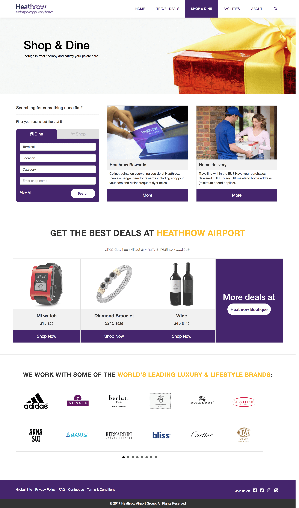
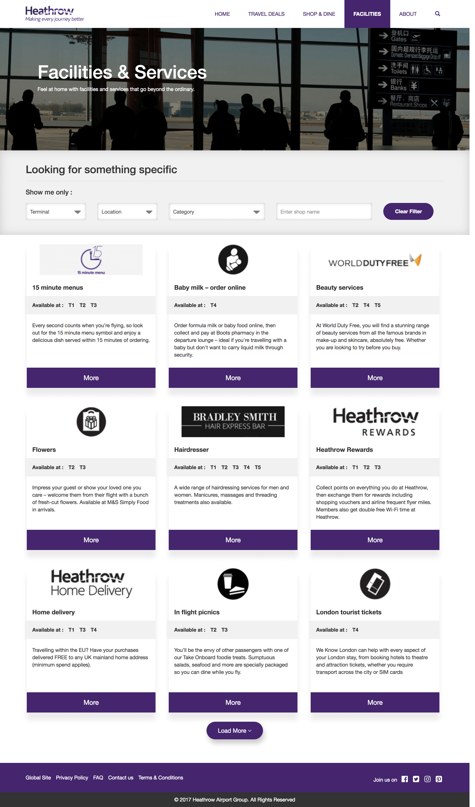
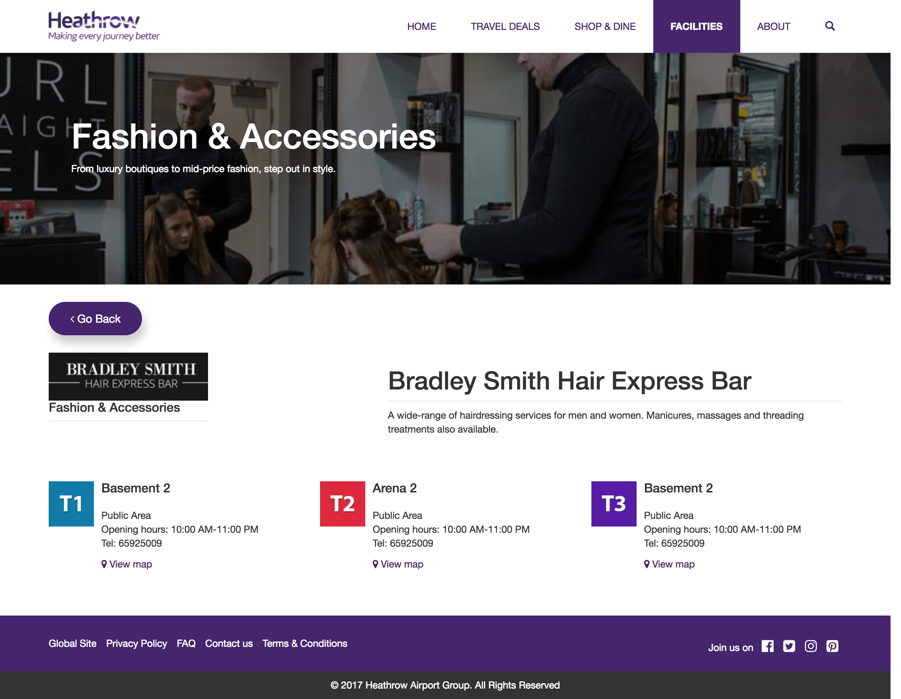

During my job search I've applied to cleartrip for the position of Product designer. Cleartrip is a global online travel company, which operates an online travel aggregator website for booking flights and train tickets, hotel reservations, and activities in India and the Middle East countries. It has offices across India, UAE, Saudi Arabia and Egypt.
Problem Statement (Assignment):
Sunny Britto is a digital marketing professional who has been in London for 3 days on work. The hotel he's staying at has a strict check-out policy - he would have to pay extra if he doesn't check out after 10:00 am.
His return flight to Mumbai from London Heathrow is at 5:00 pm, he is expected to report at the airline counter around 3 pm. Which leaves him with 3 hours to kill. 3 hours is not enough for him to catch any sights in London.
So, he's left with only one option - spending that time at the airport. Maybe a good opportunity to buy souvenirs for his family, some booze from the duty free and grab a quick bite before he checks-in.
He has a wife & 1-year-old son and he loves Japanese food.
The Aim is to design a set of airport information pages (web pages) or a microsite which is responsive and caters to his needs, so he can look information about the Heathrow airport to maximise those 3 hours.
Deliverables -
-
Uniqueness of the design solution
-
Depth of design thinking
-
Clarity in overall communication & usability
-
Attention to details, finish & quality of the final product
-
Structured/ Semantic markup
How I solved
This product not just requires designing some clean pages, or some beautiful mocks. I have to take the full ownership of the product and have to make things from scratch. There are certain steps which I've followed to make things happen -
-
Research - The beginning of everything: target audience, goals, tasks, context, meaningful requirements, etc.
-
IxD & Wireframing - Affordances, cues, CTAs, visual elements – everything is put onto the interface blueprints in order to engage a user, motivate him to interact, and ensure positive emotional feedback afterward.
-
Design and Prototype - While designing a product I make sure that it's pixel perfect and the flow is clean enough so that even a kid could navigate through the interface. Once I'm satisfied with what I've designed, I Prototype (HTML/CSS or Invision)
Tools used -
Photoshop(Design), Invision(Rough prototype), HTML/CSS, Bootstrap, jQuery (Development)
Solution
For the solution I had created a microsite(Combinaion of 9 web pages) that is responsive and caters the need of the user waiting at the airport so that he can look information about the Heathrow Airport, but some souvenirs for his family, some booze from the duty free grabs a bite before he checks-in.
The Homepage
My idea behind the homepage is to provide as much as information about the Heathrow airport like, the shopping, facilities, ticket offers, Dinner and drinks,etc.
It contains a set of sections each providing a particular information or service.
On the top the page theres section for ticket offers section. Which are the special offers that a user can only get when they are directly booking through heathrow.
Boutique section at the bottom helps the user to pre-book the order and easily collect it before the flight takes off.

Shop and dine Page
This page contains a custom filter that actually works as an elastic search. All you need to do is choose a tab and further sub-filters in that tab i.e. Terminal(T1, T2, T3), Location(Before Security, After Security), Category(Superfast lunch, Cheap Dine, Luxury Dines) and Search by keyword. It saves time of browsing all the shops and eating places by shrinks down the search and filtered result accordingly.
This section also contains some of the Heathrow boutique parts with the best deals. Also the list of brands to choose from at the bottom of the page.
Shopping directory page
Contains a set of cards displaying the image for the particular shop and some description about that store. Also, link to know more about the store and know its exact location.
These cards also show the terminals information i.e. we can check if the store is available near your terminal or not.
If the user is looking for something specific then he can also use the custom filters to filter the results to save time if he does not have that amount of time before check-in.
Shop/store information page
Contains the detailed information about any shop and shows you the exact location of that store. You can also check out the avalibility of that store in different terminals.
Thanks for reading. All Projects